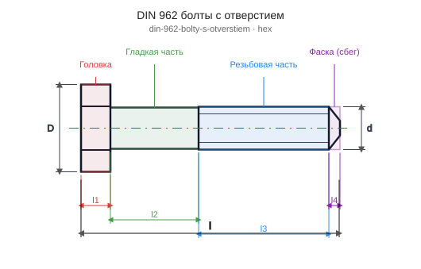

DIN 962 болты с отверстием
DIN 962 болты с отверстием — крепёжное изделие для разъёмного соединения деталей. Болт устанавливается в отверстие или совместно с гайкой и обеспечивает надёжную фиксацию узла при соблюдении класса прочности, момента затяжки и условий эксплуатации.

Сферы применения
DIN 962 болты с отверстием — крепёжное изделие для разъёмного соединения деталей. Болт устанавливается в отверстие или совместно с гайкой и обеспечивает надёжную фиксацию узла при соблюдении класса прочности, момента затяжки и условий эксплуатации.
- Машиностроение и оборудование: сборка узлов, корпусов, кронштейнов и механизмов.
- Строительство и металлоконструкции: соединение элементов каркасов, площадок, ограждений и инженерных систем.
- Ремонт и обслуживание: замена крепежа при сборке/разборке узлов, где требуется разъёмное соединение.
Стандарт/обозначение: DIN 962. При подборе аналога важно сверять геометрию, класс прочности, шаг резьбы и покрытие.
Материалы и покрытия
Болты изготавливают из углеродистых, легированных и нержавеющих сталей, а для специальных задач — из латуни, алюминиевых сплавов или титана. Выбор материала определяется нагрузкой, средой эксплуатации и требованиями стандарта.
- Углеродистая сталь классов 4.6, 5.8, 8.8, 10.9, 12.9: основной вариант для машиностроения и строительства; класс прочности подбирают по расчётной нагрузке.
- Нержавеющая сталь A2/A4: для влажных, наружных и агрессивных сред; A4 предпочтительна при воздействии хлоридов и морской атмосфере.
- Цинковое покрытие: самая распространённая защита от коррозии для углеродистой стали; подходит для сухих и умеренно влажных условий.
- Горячее цинкование: более толстый слой цинка для улицы, инфраструктуры и повышенной влажности.
- Фосфатирование, оксидирование, фланцевые покрытия/геомет: применяются по требованиям к трению, коррозионной стойкости или совместимости с гайками/шайбами.
Производители в России и Китае
Болты — массовый сегмент крепежа, поэтому на рынке одновременно присутствуют глобальные производители, российские заводы и китайские OEM-поставщики.
- Международные бренды: Nord-Lock, Bossard, Würth, Hilti, Fischer, Sormat и др. поставляют болты с контролем качества, сертификатами и трассируемостью партий.
- Россия: болты нормального и высокопрочного исполнения выпускают отечественные заводы крепёжных изделий и метизные предприятия; при ответственных применениях важно проверять сертификаты соответствия, протоколы испытаний и класс прочности.
- Китай: один из крупнейших мировых производителей стандартного крепежа. При поставках из Китая критичны входной контроль материала, резьбы, покрытия, механических свойств и маркировки.
Краткая история
Резьбовые крепёжные соединения известны с античности, но массовое производство стандартизированных болтов развилось в эпоху промышленной революции. Унификация резьб и размеров позволила сделать болты взаимозаменяемыми и широко применять их в машиностроении, строительстве и транспорте.
В XX веке появились национальные и международные стандарты (DIN, ISO, ГОСТ), а также классы прочности и покрытия, что обеспечило предсказуемость работы болтовых соединений в ответственных конструкциях.
Размеры и варианты
| Наименование | Размер | Длина, мм | Материал | Покрытие |
|---|---|---|---|---|
| DIN 962 болты с отверстием | M6 | по стандарту/заказу | Сталь кл.пр. 4.6/5.8/8.8; нерж. A2/A4 | Без покрытия; цинк; горячий цинк |
| DIN 962 болты с отверстием | M8 | по стандарту/заказу | Сталь кл.пр. 4.6/5.8/8.8; нерж. A2/A4 | Без покрытия; цинк; горячий цинк |
| DIN 962 болты с отверстием | M10 | по стандарту/заказу | Сталь кл.пр. 4.6/5.8/8.8; нерж. A2/A4 | Без покрытия; цинк; горячий цинк |
| DIN 962 болты с отверстием | M12 | по стандарту/заказу | Сталь кл.пр. 4.6/5.8/8.8; нерж. A2/A4 | Без покрытия; цинк; горячий цинк |
Типовые значения. Точный размерный ряд, длины, класс прочности и покрытие уточняйте по стандарту и ТУ производителя.